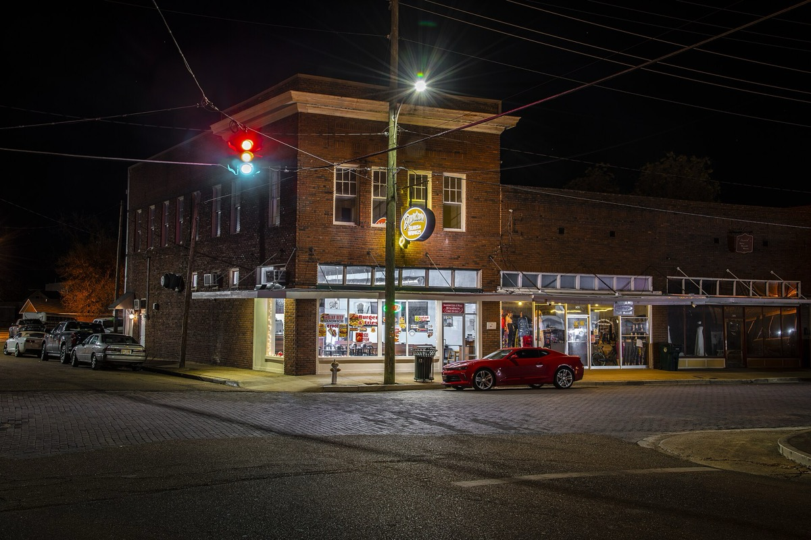

1
Register
- Where firms stall
- Never finish the supplier registration after the fair.
- In place today
- Entergy’s supplier registration, open to Arkansas firms.
- Built to Stay adds
- A workshop where firms register together, in the room.

Getting Jefferson County firms, kitchens and workers from the vendor fair to a contract, and still working when the build is done.
Entergy told the Arkansas Public Service Commission it will work with its contractor “to use local contractors and suppliers when possible.” Its own line is Arkansans building Arkansas. The question is how many Jefferson County firms are ready when the packages open.
All four from Entergy’s testimony as summarized in APSC Order No. 4, Docket 25-054-U (March 2026), and the Commission’s 2026 Generating Arkansas Jobs Act report.
Census County Business Patterns 2023; American Community Survey 2020–2024, table B17001; 1980 census and 2025 population estimate.
The county’s firms are small, and nobody publishes how much of a build like this stays in the county.
A small county firm has five steps to clear between a vendor fair and an award. The pieces exist. What nobody owns is the follow-through between them, which is where small firms stall.


Selling a single catering job is one thing. Knowing how to clear a procurement process and become a vendor is what leaves a business stronger for the next plant.
Each one runs through the same steps: get ready, get matched, get counted. Open any of them to walk through an example and size it yourself, starting with crew meals.

Worked exampleOne central kitchen, meals delivered to the laydown yards, county kitchens cooking. Crews stay on site at lunch.

County residents placed on the build, and some into the plant’s permanent jobs.

Hauling, fencing, seeding, site services and upkeep, from vendor fair to contract, then 30 years of upkeep.

A voluntary planning program for landowning families, led by independent advisers.

Backup power for clinics, shelters and churches, so care stays open through the next storm.
One workshop to start. Thirty minutes every two weeks. The county is ready before the package opens.
Not a food truck at the gate. A program that brings fresh, simple meals to crews where they work, so nobody drives off site at midday, and lets the county’s own kitchens supply it.
| Kitchen | Cooks | Health permit | Insurance | Status |
|---|---|---|---|---|
| Kitchen A | Soul food | Yes | Yes | Ready |
| Kitchen B | Barbecue, catering | Yes | Adding | Week 2 |
| Kitchen C | Bakery, breakfast | Yes | Yes | Ready |
| Kitchen D | Sides, salads | Applying | Yes | Week 3 |
4 kitchens checked
Example| Yard | Crew | Meals | Window |
|---|---|---|---|
| North laydown yard | Civil crew | 140 | 11:30 |
| Battery yard | Electrical | 85 | 12:00 |
| East array blocks | Racking | 120 | 12:30 |
Locked at 9 a.m.
ExampleOn site by noon
Example| Kitchen | Meals cooked | Paid |
|---|---|---|
| Kitchen A | 610 | $4,270 |
| Kitchen C | 390 | $2,730 |
| Kitchen D | 260 | $1,820 |
Paid in 7 days
ExamplePartner-reviewed
Example figuresWhat the program moves
Facts to confirm, set at the middle of the known range
The scenarios move one thing: how much of the cooking goes to county kitchens. Everything else is set at the middle of its range until Wanzek confirms it: 45% of 750 peak workers eating, 7.5 months at peak, about 21.7 working days a month. Hotel nights happen with or without the program; room rate is the federal lodging rate ($110), not a local quote. The meal program ends with the build.
Training that starts with a committed job, so county residents are ready when Wanzek and its subcontractors hire.
| Trade | Starts | Openings |
|---|---|---|
| Craft laborers | February | 40 |
| Equipment operators | March | 12 |
| Electrician helpers | May | 25 |
From Wanzek’s plan
ExamplePlacement first
Example| Resident | Trade | Employer | Start |
|---|---|---|---|
| Resident A | Laborer | Wanzek | Feb 3 |
| Resident B | Laborer | Fencing subcontractor | Feb 10 |
| Resident C | Operator trainee | Wanzek | Feb 17 |
18 placed
ExampleCounted at 12 months
Example figuresWhat the program moves
Facts to confirm, set at the middle of the known range
The scenarios move two things: local hire share, from 11% (a Kentucky solar build with no program) to 50% (a California county standard), and how many permanent jobs go to county residents. Crew size and pay are set at the middle of Entergy’s ranges (700–800 workers, $5,000–$8,000 a month) until Wanzek’s staffing plan replaces them. The build runs about 29 months. Permanent pay: Arkansas substation and relay technicians (O*NET, 10th percentile to median).
Getting county firms registered, prequalified and matched to packages during the build, and positioned for the 30 years of upkeep after it.
Corrected by partners
Example| Trade | Firms | Registered in the room | Need help with |
|---|---|---|---|
| Food service | 9 | 7 | Liability limits, health permit |
| Hauling | 6 | 5 | Safety record, auto coverage |
| Site services | 5 | 4 | Avetta, written safety program |
| Professional | 3 | 3 | None |
Agenda: how Entergy and Wanzek buy; registration; safety prequalification; insurance; what’s opening.
23 firms attended
Example| Requirement | Status | Fix | By |
|---|---|---|---|
| Supplier registration | Done | — | — |
| General liability and auto | Meets | — | — |
| Safety record | Gap | Written safety program and plan filed | Week 6 |
| Avetta prequalification | Started | Upload safety program | Week 7 |
| References | 2 similar jobs | — | — |
Requirements shown are typical; the real list comes from Entergy and Wanzek.
Closing the gap
Example| Firm or cohort | Work | Registered | Avetta | Status |
|---|---|---|---|---|
| Kitchen A | Crew meals | Yes | n/a | Ready |
| Hauler B | Gravel, hauling | Yes | Started | Closing a gap |
| Fence Co. C | Perimeter fencing | Yes | Done | Ready |
| Craft cohort, 12 | Laborers | n/a | n/a | OSHA-10 done |
23 checked
ExampleThree county firms are ready to bid through your process. No recommendation and no guarantee: the choice is yours.
Sent day one
ExampleLaid out to match the Second-Tier spend reports prime contractors already file with Entergy.
Partner-reviewed
Example figuresHanded over
ExampleWhat the program moves
Facts to confirm, set at the middle of the known range
The scenarios move two things: county firms’ share of site work (10% to 30%) and of upkeep (25% to 80%). The rest is set at the middle of its range until Wanzek’s package list replaces it: site work and services at 4% of the $1.6 billion build (NREL benchmarks put it at 3–5%), 2,750 acres, NREL’s vegetation upkeep costs ($184–$281 an acre a year). The county has 4 heavy-civil and 16 trucking firms. Entergy’s filing puts all operations and maintenance at about $393 million over the plant’s life.
Lease income arrives for 30 years. A plan keeps it working for the family: wills and trusts, clear title on heirs property, and taxes handled.
Voluntary
ExampleThe family decides
ExampleSelf-reported
Example figuresWhat the program moves
Facts to confirm, set at the middle of the known range
We don’t count anyone’s lease income here; that’s private. Cost covers wills, trusts and heirs-property title work through independent advisers.
The plant keeps the grid supplied. A few backup systems keep the places people go in an outage open.
| Facility | Role in an outage | Backup power |
|---|---|---|
| Clinic A | Care, medicine cold storage | None |
| Church B | Shelter, meals | Old generator |
| Senior center C | Cooling, charging | None |
14 mapped
ExampleScoped
ExampleTested
Example figuresWhat the program moves
Facts to confirm, set at the middle of the known range
The scenarios move one thing: how many sites get backup power. Cost per site is the middle of a standby generator (our estimate) and solar with a battery (NREL unit costs). Outage costs: the middle of Lawrence Berkeley National Laboratory’s 2026 estimates for an 8- to 24-hour outage at a business site, one a year.
The workstreams, added up from their own models. The facts nobody has confirmed yet, like crew size and pay, are held at the middle of their range, so the gap between conservative and target is only what Built to Stay moves: how much of the work goes to county residents and firms.
During the build$7.0M–$31.8M
Over 30 years$15.5M–$24.8M
Moves with local hire: 11% to 50%
During the build$2.4M–$2.7M
Over 30 years—
Mostly crew hotel nights, which happen anyway. The program moves the cooking to county kitchens.
During the build$6.4M–$19.2M
Over 30 years$7.6M–$24.3M
Moves with county firms’ share of site work (10% to 30%) and upkeep (25% to 80%)
During the build$300K–$1.0M
Over 30 years$1.0M–$3.5M
Moves with sites covered: 3 to 10
Measured in10–25 plans
Not counted hereLease income
That’s private to each family. We count plans written, not dollars.
a year for 30 years: mowing or grazing on about 2,750 acres, fences, roads, drainage and security. County firms holding 25–80% of it is $250,000–$810,000 a year, for a generation.
of the plant’s 10–15 permanent jobs held by county residents, at about $71,000–$101,000 a year.
clinics, shelters or churches with backup power, maintained for the life of the systems.
county residents on site at the peak, with a credential and a construction record for the next build.
county kitchens with a health permit, insurance and a contract record, able to bid for schools, hospitals and the next plant.
firms registered and prequalified, already on the list when the next Entergy build opens.
landowning families with a written plan for what their land earns.
places where care and shelter stay open through the next storm.
Contracts decide who gets paid. Capabilities decide what stays.
This adds no work to anyone’s table. The partnership does the legwork in between, and every decision stays where it is today.
A build is usually counted by what it announces. This counts what stayed, in the format Entergy already uses.
Counted todayJobs announced: 700–800 for the build, 10–15 permanent
Count alsoCounty residents placed, and still in the trade a year later
Not tracked by county today
Counted todayLocal spend, reported quarterly by prime contractors
Count alsoJefferson County firms registered, prequalified, bidding and awarded
Not publicly reported by county
Counted todayVendor fair attendance: about 340 company representatives
Count alsoFair attendees who went on to win work
New. Starts at zero
Counted todayPlant completed: December 2028
Count alsoCounty firms with a repeat contract within two years
New. Starts at zero
Where it worked, someone owned local participation and published the numbers.
Local workforce against a 20% goal, with a named community-benefits team responsible for it.
A state-run program that makes local suppliers ready to bid on megaprojects like Meta’s and Hyundai’s.
Louisiana firms won $875M in the build’s first year, 84% of them from Northeast Louisiana (Meta’s figures).
Company representatives came. What happened next isn’t published yet: that’s the gap.
It starts with what the project needs now, and grows only where partners see value. Timing follows the public construction schedule and will change.
Meet Entergy’s supplier and economic development teams and the contractor. Confirm what’s opening. Run the first vendor workshop.
What remainsA ready list and readiness records
The meal program at one laydown yard; the first packages matched to ready firms. Measures agreed first.
What remainsCounty firms with a first award
Meals at every yard; more trades; the workforce and landowner programs. Public and philanthropic partners for resilience.
What remainsResidents still in the trade; families with a plan
The list to Entergy’s next build; the method written down for other Delta counties.
What remainsFirms with a record that wins the next contract
No money, no set-asides, no change to anyone’s process.
Stedmon Harper · harper@face.works
The immediate goal is modest. The ambition is that the Delta prospers alongside the infrastructure it hosts.
Built to Stay is brought on behalf of the Monson family, landowners in the Arkansas Cypress project in Jefferson County. My mother, Reneta Harper, worked 30 years at Entergy Arkansas. We know the company, and we know the place.
The work is done by a network of Arkansas builders who run operations, systems and programs for a living. I’m Stedmon Harper. I lead it and do the talking, but it isn’t one person’s project. We don’t speak for other landowners or the wider community, and our land interest is kept separate from this work.
Coordination, partners and the day-to-day. Partner at HUE Unlimited; runs Facework, which operates the system. Co-built a leadership platform for UAPB’s Emerging Scholars Leadership Institute.
Turns the readiness work into a process that runs on schedule. Leads last-mile delivery strategy at Walmart; earlier built delivery operations from the ground up.
SimmCo. Co-built the Emerging Scholars platform with UAPB, and works with Delta institutions on leadership and venture programs.
The readiness records, the ready list and the monthly count. Builds operations and data systems for market launches.
How the work is told, so the people doing it are the ones seen. Creative director at HUE Unlimited.
How the work is supported is something to set together with partners, not asked for up front. Others in our network are ready to help as the work grows.